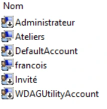
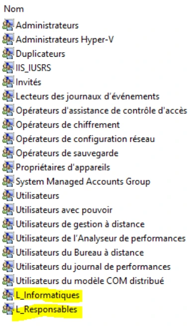
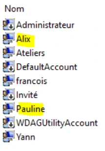

Module 05 — Les utilisateurs et les groupes¶
La transcription du support Drive et l’aide pédagogique sont séparées pour rendre leur provenance explicite.
SOURCE DRIVE · TRANSCRIPTION DU SUPPORT
Le contenu des documents du dossier TSSR est transcrit ci-dessous, page par page. Les textes et tableaux sont intégrés à la page Web. Aucun fichier PDF, aucune diapositive entière ni aucune reproduction de page n’est affiché. Seuls des croquis ou visuels isolés et vérifiés peuvent accompagner la transcription. Les versions et les consignes restent celles des supports de formation. Les compléments IA sont conservés dans leur onglet distinct.
Support · Module 05 - Support de cours · 12 pages transcrites
Systèmes clients Microsoft
Module 05 – Les utilisateurs et les groupes
Objectifs
- Prendre conscience de l'importance de la notion d'utilisateur
- Distinguer les utilisateurs et leurs profils
- Gérer les utilisateurs et les groupes
- Découvrir les outils de gestion
- Assimiler le fonctionnement de l'UAC
Les objets utilisateurs et groupes
- Notion d'utilisateurs
- Les profils d'utilisateurs
- Les groupes
- Le contrôle de compte utilisateurs
La notion d’utilisateur
- Le système d'exploitation client Windows est une porte ouverte sur le système d'information de l'entreprise
- Êtes-vous une personne de confiance ?
- Identifiant ?
- Mot de passe ?
- Accès en lecture ? En modification ? À quelques fichiers ? À l'ensemble du réseau ?
- Simple utilisateur ? Technicien informatique ? Administrateur de l'entreprise ?
La notion d’utilisateur
- 1 collaborateur de l'entreprise = 1 utilisateur du système d'information
- Accès au SI validé par :
- Le couple Identifiant + Mot de passe
- Biométrie (Windows Hello)
- Objet tiers (carte à puce, badge…)
- 2de authentification possible dans certains contextes spécifiques (SMS, lien de validation, etc.)
Gestion des utilisateurs
Utilisateur local
- Propre à chaque ordinateur
- Stocké dans la base de données locale SAM (Base Security Account Manager)
- L'utilisateur ne peut exploiter que les ressources de l'ordinateur source
Gestion des utilisateurs
Utilisateur du domaine
- Stocké dans une base de données commune (annuaire Active Directory)
- Sur un serveur de l'entreprise (contrôleur de domaine)
- Externalisé chez un prestataire (Microsoft Azure ou autre)
- Authentification Kerberos sécurisée par le réseau
- Un utilisateur peut ouvrir une session sur tous les ordinateurs du domaine
- Un utilisateur (local, de domaine) est identifié par le système grâce à son SID (Security IDentifier)
Gestion des utilisateurs
Ouverture de session
- Pour les utilisateurs locaux
- Utiliser un compte présent dans la base SAM
- Sont affichés par défaut sur l'écran d'accueil
- Pour les utilisateurs du domaine
- Jonction du poste au domaine de l'entreprise indispensable au préalable
- Domaine sélectionné par défaut Possibilité de s'authentifier grâce à l'annuaire d'un autre domaine
Attention, la liste des utilisateurs locaux n’apparaît plus une fois l’ordinateur joint au domaine de l’entreprise !

Les catégories d’utilisateurs
- Standard
- Pour utiliser les ressources de l'ordinateur
- Être membre du groupe Utilisateurs
- Administrateur
- Pour utiliser et modifier les ressources de l'ordinateur
- Être membre du groupe Administrateurs
- L'utilisateur créé à l'installation du système est membre du groupe Administrateurs
- Le compte administrateur est désactivé par défaut
- Le compte Invité
- Pour une utilisation restreinte des ressources de l'ordinateur
- Pas besoin de mot de passe pour accéder aux ressources
- Ce compte est désactivé par défaut
La gestion des profils
Un utilisateur ouvre une session pour la première fois, un profil personnel est créé
- Dans le dossier C:\Users
- Propre à chaque utilisateur
- Contient tous les paramètres et données de l'utilisateur
- Documents
- Téléchargement
- Bureau
- Images…

La gestion des profils
Un utilisateur ouvre une session pour la première fois, un profil personnel est créé
- Dans le dossier C:\Users
- Propre à chaque utilisateur
- Contient tous les paramètres et données de l'utilisateur
- Documents
- Téléchargement
- Bureau
- Images…
- Profil public : commun à tous les utilisateurs
- Profil par défaut (caché) : modèle pour la création d'un nouveau profil
La gestion des profils
Comment gérer les profils ?
- La gestion manuelle des profils dans le dossier c:\Users est à proscrire !
- sysdm.cpl onglet Paramètres systèmes avancés
- Supprimer des profils
- Modifier le type du profil
- Gestion du profil par défaut


Gestion des groupes
- Tout utilisateur doit appartenir à au moins un groupe
- Un groupe est identifié par le système grâce à son SID (Security IDentifier)
- Le SID du groupe s'ajoute au jeton d'accès de l'utilisateur
- Groupes locaux
- Pour configurer les autorisations d'accès aux ressources
- Pour configurer les privilèges d'administration
- Groupes prédéfinis
- Présent nativement
- Pour configurer les privilèges et la délégation d’administration (Administrateurs, Opérateurs de sauvegarde…)
- Entités intégrées de sécurité
- Non visibles dans les consoles
- Affectation automatique
- Utilisés par le système pour la gestion des permissions (Tout le monde, Utilisateurs authentifiés…)
Gestion des utilisateurs et des groupes
Configuration
- Graphiquement grâce aux consoles MMC
- lusrmgr.msc (gestion des utilisateurs et groupes locaux)
- compmgmt.msc (gestion de l'ordinateur)
- Menu Comptes d'utilisateurs dans le panneau de configuration (orienté utilisateur)
- En ligne de commande
- net user (net help user pour l'aide détaillée)
- net localgroup (net help localgroup)


Gestion des utilisateurs et des groupes
Configuration en PowerShell
| Description | verbe | -nom |
|---|---|---|
| Affiche la liste des utilisateurs locaux | Get | -LocalUser |
| Créer un nouvel utilisateur dans la base SAM | New | -LocalUser |
| Modifier un utilisateur local existant | Set | -LocalUser |
| Renommer un utilisateur | Rename | -LocalUser |
| Activer l’utilisateur, il pourra de ce fait utiliser les ressources de l’ordinateur | Enable | -LocalUser |
| Désactiver un utilisateur | Disable | -LocalUser |
| Supprimer un utilisateur de la base SAM | Remove | -LocalUser |
Manipulation des groupes et de leurs membres avec les cmdlets : {Get | Set | New | Remove}-LocalGroup et {Get | Set | Remove}-LocalGroupMember.
Démonstration
Contrôle de comptes d’utilisateur (UAC)
Sans action particulière, le système loge tous les utilisateurs à la même enseigne … même les administrateurs !
- Par l'intermédiaire de l'UAC, le système n'accorde les privilèges que lorsque c'est nécessaire
- Élévation de pouvoir symbolisée par le « bouclier »
- Validation requise pour un administrateur
- Authentification requise pour un utilisateur
Contrôle de comptes d’utilisateur (UAC)
- Pourquoi ces contrôles ?
- Lutter contre les actions des programmes malveillants
- Avertir face à un paramètre sensible du système
- Comment le configurer ?
- Via le panneau de configuration
- À l'aide de la stratégie de sécurité locale
- secpol.msc
- Stratégies locales > Options de sécurité
- Valeurs Contrôle de compte d'utilisateur
Il est donc déconseillé de désactiver l’UAC.


Contrôle de comptes d’utilisateur (UAC)
Pour certaines actions, il est nécessaire de demander l’élévation
- Graphiquement avec la fonction Exécuter en tant qu’administrateur
Récapitulatif
Un utilisateur est associé à :
- Un nom d’ouverture de session et un mot de passe
- Un profil local
- Généré à la première ouverture de session
- Contient les données personnelles et les paramètres de l'utilisateur
- Un identifiant unique (SID)
- Des appartenances de groupe définies dans l’onglet Membre de
- L'ensemble des SID constituent le jeton d'accès, ouvrant des accès et accordant des privilèges
- Les informations du jeton d'accès sont consultables avec la commande whoami


Démonstration
TP
Conclusion
- Un collaborateur = un utilisateur
- A chacun son métier
- A chacun ses données
- Le système est protégé
- L’identification est la clé de la sécurité
Référence du document : 1s2o2V7Zj5iJuErUiXOsz9PAEcmDykImt · SHA-256 b428003d4e687898…
Énoncé · Enoncé du TP - Gestion des utilisateurs et des groupes · 7 pages transcrites
Systèmes Clients Microsoft Gestion des utilisateurs et des groupes
TP du Module 05 – Les utilisateurs et les groupes
Au cours de ce TP, vous allez être amené à manipuler les utilisateurs et les groupes. Vous mettrez en place des privilèges d’administration et vous testerez leurs effets. Vous parcourrez les caractéristiques des utilisateurs et des groupes. Vous effectuerez toutes ses manipulations à l’aide de l’interface graphique, mais aussi par l’intermédiaire des shells Microsoft.
Durée estimée
1 heure 30 minutes
Énoncé
Lisez l'ensemble de cet atelier avant de vous lancer dans la pratique
À l'aide de la console de gestion des utilisateurs de la VM Win10-XX, créez les objets avec les paramètres suivants :
- Créez une procédure relative aux deux points suivants :
o François possédera un mot de passe qui n'aura pas de date d'expiration.
o Il fera partie des groupes L_Informatiques et L_Responsables (vous créerez les groupes en amont).
- Yann fera partie des mêmes groupes que François.
- Créez deux comptes utilisateurs auxquels vous donnerez nom, prénom, login et mot de passe de votre choix. Ils feront partie du groupe L_Collegues
Mise en place de privilèges d'administration
- François aura la possibilité d'administrer l'ensemble des ressources du poste Win10-XX.
- Yann pourra consulter les journaux d'évènements et configurer la carte réseau.
- Vous accorderez à vos collègues la possibilité de sauvegarder votre poste Win10-XX.
- Retirez l'un de vos collègues du groupe utilisateurs.
Informations concernant les utilisateurs et groupes
- En naviguant dans la console graphique des utilisateurs et des groupes, listez les propriétés d'un utilisateur : Nom complet, Description
Listez les propriétés d'un groupe
À l'aide de la ligne de commande cmd.exe
- Afficher les informations du compte utilisateur François.
- Affichez les membres du groupe administrateurs
- Créez un utilisateur Romain, attribuez-lui un mot de passe. Attention, pour des questions de sécurité, le mot de passe que vous taperez ne devra pas être visible à l'écran !
- Ajoutez Romain au groupe L_Responsables
Manipulations supplémentaires avec l'interface graphique de Windows 10
- Fermez la session de l'utilisateur en cours.
- Quels utilisateurs peuvent ouvrir une session sur le poste ?
- L'un de vos collègues ne peut pas ouvrir de session. Pourquoi ?
- Ouvrez une session avec l'utilisateur François puis affichez les profils présents sur le système. Que peut-on observer ?
- À l'aide de la ligne de commande, affichez son SID, puis affichez les SID des groupes dont il est membre.
À l'aide de PowerShell et de la VM Discovery
- Afficher la liste des utilisateurs sur le système. Vous afficherez le nom, le SID et la description de chacun d'eux.
- Afficher les informations suivantes concernant l'utilisateur james : Nom complet, description, classe d'objets, date de dernière connexion
- Ajouter la description Compte générique avec privilèges d'administration à l'utilisateur adm
- Afficher le nom et le SID des membres du groupe local L_SupportInfo
Solution
Une solution est proposée pour ce TP sous la forme d'un PDF commenté, disponible dans les ressources à télécharger.
Référence du document : 1zUt7LGnurr8Z4KlkK8CwpiBBzF0M7qnK · SHA-256 a420fe7d72fd5707…
Synthèse du Drive · Synthèse Module 5 - Gestion des Utilisateurs, Groupes et UAC V2 · 3 pages transcrites
Les synthèses Windows 10 de ce dossier sont rattachées au cours Systèmes clients.
Synthèse — Module 5 : Les Utilisateurs, les Groupes et le Contrôle de Comptes (UAC) (V2)
1. Concept d’Utilisateur et de Profil
Dans Windows 10, chaque collaborateur est identifié par un compte d’utilisateur associé à un identifiant de sécurité unique (SID - Security Identifier).
- Utilisateur Local : enregistré dans la base de données locale SAM (Security Account Manager) du poste.
- Utilisateur de Domaine : enregistré dans l’annuaire Active Directory pour un accès centralisé.
- Profil Utilisateur : dossier personnel stocké dans C:\Users\<nom> contenant les paramètres et documents de l’utilisateur. La gestion des profils se fait via sysdm.cpl.
2. Gestion des Groupes et Autorisations
Les groupes permettent de simplifier l’attribution des droits et privilèges. Un utilisateur hérite des permissions accordées aux groupes auxquels il appartient.
| Type de groupe | Exemples / Rôle |
|---|---|
| Administrateurs | Contrôle total sur l’ordinateur et le système. Compte administrateur désactivé par défaut. |
| Utilisateurs | Membres standards autorisés à exécuter des applications sans modifier le système. |
| Invités (Guests) | Accès très restreint, désactivé par défaut. |
| Entités intégrées | Tout le monde, Utilisateurs authentifiés (gérées automatiquement par l’OS). |
3. Contrôle de Compte d’Utilisateur (UAC) et Administration
L’UAC (User Account Control) empêche les modifications système non autorisées en imposant une confirmation ou une saisie de mot de passe administrateur (élévation de privilèges symbolisée par le bouclier).
Commandes de gestion CLI et PowerShell
:: Gestion des utilisateurs et groupes locaux (cmd.exe)
net user
net user pdupond Pa$$w0rd /add
net localgroup Administrateurs pdupond /add
whoami /all
:: Lancement des consoles de gestion MMC
lusrmgr.msc
compmgmt.msc
secpol.mscCmdlets PowerShell de gestion des utilisateurs locaux
Get-LocalUser
New-LocalUser -Name "pdupond" -AccountNeverExpires
Add-LocalGroupMember -Group "Administrateurs" -Member "pdupond"
Disable-LocalUser -Name "Guest"Référence du document : 1xPtrQx5oKA-CNDqmsl8HKcDMVemUE5n-XXwvyJYUpqU · SHA-256 e6bea2f53019f56d…
Notes du Drive · module 5 et 6.txt · document texte
Notes textuelles présentes dans le Drive. Aucun support de cours illustré distinct n’est fourni pour ce document ; aucune illustration n’a été inventée ou attribuée au support.
Inexistant
Le fichier de notes est vide dans le Drive. Aucun contenu n’a été inventé.
Référence du document : 1Oi75J3l2QDn53DJw1GUoxHxkXTShq3T7 · SHA-256 e3b0c44298fc1c14…
Correction · Solution du TP - Gestion des utilisateurs et des groupes · 7 pages transcrites
Correction originale : à consulter après avoir tenté l’exercice.
Les utilisateurs et les groupes
TP du Module 05 – Les utilisateurs et les groupes
Proposition de solution
À l'aide de la console de gestion des utilisateurs de la VM Win10-XX, créez les objets avec les paramètres suivant :
- François possèdera un mot de passe qui n'aura pas de date d'expiration.
- Il fera partie des groupes L_Informatiques et L_Responsables (vous créerez les groupes en amont).
Dans votre console personnalisée MaConsole.msc disponible sur votre bureau
Composant logiciel enfichable "Utilisateurs et groupes locaux" > utilisateurs
Clic droit > Nouvel utilisateur
Remplir le champ Nom d'utilisateur "françois" ou "francois" et entrez un mot de passe
Vous pouvez décocher l'utilisateur doit changer son mot de passe à la prochaine ouverture de session
Cocher Le mot de passe n'expire jamais.
Créer puis Fermer
Francois apparait dorénavant dans la fenêtre des utilisateurs
Composant logiciel enfichable "Utilisateurs et groupes locaux"
Clic droit > Nouveau groupe …
Nom du groupe : L_Informatiques
Ajouter …


Entrez les noms des objets à sélectionner : francois
OK
Créer
Nom du groupe : L_Responsables
Ajouter…
Entrez les noms des objets à sélectionner : francois
OK
Créer
Fermer
Les deux nouveaux groupes apparaissent dans la liste


- Yann fera partie des mêmes groupes que François.
Dans votre console personnalisée MaConsole.msc disponible sur votre bureau
Composant logiciel enfichable "Utilisateurs et groupes locaux" > utilisateurs
Clic droit > Nouvel utilisateur
Remplir le champ Nom d'utilisateur "Yann" et entrez un mot de passe
Vous pouvez décocher l'utilisateur doit changer son mot de passe à la prochaine ouverture de session
Créer puis Fermer
Yann apparait dorénavant dans la fenêtre des utilisateurs
Clic droit sur l'utilisateur Yann > Propriétés
Onglet Membre de
Ajouter…
Entrez les noms des objets à sélectionner : L_Informatiques;L_Responsables
Appliquer > OK
- Créez deux comptes utilisateurs auquel vous donnerez nom, prénom, login et mot de passe de votre choix. Ils feront partie du groupe L_Collegues
Composant logiciel enfichable "Utilisateurs et groupes locaux" > utilisateurs
Clic droit > Nouvel utilisateur
Remplir le champ Nom d'utilisateur et entrez un mot de passe
Vous pouvez décocher l'utilisateur doit changer son mot de passe à la prochaine ouverture de session
Créer
Refaites ces étapes pour un utilisateur supplémentaire puis Fermer
Ils apparaissent dorénavant dans la fenêtre des utilisateurs


Composant logiciel enfichable "Utilisateurs et groupes locaux"
Clic droit > Nouveau groupe …
Nom du groupe : L_Collegues
Ajouter …
Entrez les noms des objets à sélectionner : Pauline;Alix
OK
Créer
Fermer
Mise en place de privilèges d'administration
- François aura la possibilité d'administrer l'ensemble des ressources du poste Win10- XX.
Ajouter François dans le groupe prédéfini Administrateurs
- Yann pourra consulter les journaux d'évènements et configurer la carte réseau.
Ajouter Yann dans les groupes prédéfinis suivants :
Lecteurs des journaux d'événements
Opérateurs de configuration réseau
- Vous accorderez à vos collègues la possibilité de sauvegarder votre poste Win10-XX.
Ajouter vos deux utilisateurs supplémentaires dans le groupe prédéfini Opérateurs de sauvegarde
L'imbrication de groupe n'est pas opérationnelle d'un groupe local vers un autre groupe local d'une base SAM d'un système d'exploitation client. Il est possible de le faire en ligne de commande mais pour simple information
- Retirez l'un de vos collègues du groupe utilisateurs.
Supprimer l'un de vos deux utilisateurs du groupe prédéfini Utilisateurs
Informations concernant les utilisateurs et groupes
- En navigant dans la console graphique des utilisateurs et des groupes, listez les propriétés d'un utilisateur.
Nom complet
Description
3 actions possibles sur les mots de passe (Changement à la prochaine ouverture de session, expiration, impossibilité de changer de mot de passe)
2 actions possibles sur le compte (désactivation et déverrouillage)
Appartenance aux groupes
Information de profil, script d'ouverture de session, connexion automatique à lecteur réseau et mappage via une lettre de lecteur, local path
- Listez les propriétés d'un groupe.
Description
Ajouter ou supprimer des membres dans le groupe
À l'aide de la ligne de commande cmd.exe.
- Afficher les informations du compte utilisateur François.
net user francoisOn remarquera ici que la ligne de commande affiche beaucoup plus d'informations concernant l'utilisateur que le composant logiciel enfichable "Utilisateurs et groupes locaux". Cela prouve que la ligne de commande est plus pointue, plus aiguisée et complète que l'interface graphique
- Affichez les membres du groupe administrateurs
net localgroup administrateurs- Créez un utilisateur Romain, attribuez-lui un mot de passe. Attention, pour des questions de sécurité, le mot de passe que vous taperez ne devra pas être visible à l'écran !
net user Romain * /addEntrez le mot de passe au clavier, il ne s'affichera pas à l'écran
Attention, pour pouvoir créer un nouvel utilisateur dans la base SAM, vous devez ouvrir une fenêtre de ligne de commande en tant qu'administrateur. Créer un utilisateur, c'est modifier le système !
- Ajoutez Romain au groupe L_Responsables
net localgroup L_Responsables Romain /addManipulations supplémentaires avec l'interface graphique de Windows 10
- Fermez la session de l'utilisateur en cours.
logoff- Quels utilisateurs peuvent ouvrir une session sur le poste ?
Seuls les utilisateurs membres des groupes Utilisateurs, Administrateurs ou Invités peuvent ouvrir une session locale sur la machine
- L'un de vos collègues ne peut pas ouvrir de session. Pourquoi ?
L'un de vos utilisateurs supplémentaires n'apparait pas sur l'écran d'accueil car vous l'avez supprimé du groupe utilisateurs
- Ouvrez une session avec l'utilisateur François puis affichez les profils présents sur le système. Que peut-on observer ?
Après avoir ouvert une session avec l'utilisateur francois, terminez la configuration de son profil utilisateur. Puisque c'est la première fois que François ouvre une session, un profil d'utilisateur est automatiquement créé dans le dossier c:\Users. Son profil est un sous dossier dont le nom est le même que son login.
Pour afficher les profils présents sur le système :
Rechercher > sysdm.cpl
Onglet Paramètres système avancés
Bouton Paramètres… du champ Profil des utilisateurs
Seuls les profils des utilisateurs ayant déjà ouvert au moins une fois une session sur l'ordinateur sont présents. Il existe plus d'utilisateurs que de profils dans notre cas. C'est normal. Par exemple Yann et Romain sont bien présents dans la base SAM mais n'ont pas encore ouvert de session sur l'ordinateur.
Un profil leur sera automatiquement créé lors de leur première ouverture de session, à l'aide du profil "modèle" le Profil par défaut
- À l'aide de la ligne de commande, affichez son SID, puis affichez les SID des groupes dont il est membre.
Ouvrez une ligne de commande cmd.exe
whoami /userwhoami /groupsL'ensemble de ces SID forment le jeton d'accès de l'utilisateur
À l'aide de PowerShell et de la VM Discovery
- Afficher la liste des utilisateurs sur le système. Vous afficherez le nom, le SID et la description de chacun d'eux.
Get-LocalUser | select Name,SID,Description- Afficher les informations suivantes concernant l'utilisateur james :
o Nom complet, description, classe d'objets, date de dernière connexion
Get-LocalUser -Name james | Select FullName,description,ObjectClass,LastLogon- Ajouter la description Compte générique avec privilèges d'administration à l'utilisateur adm
Set-LocalUser -Name adm -description "Compte générique administrateur de secours"- Afficher le nom et le SID des membres du groupe local L_SupportInfo
Get-LocalGroupMember -Name L_SupportInfo | Select Name,SIDRéférence du document : 1OFaYYZbg4qoJYm_UsA_9Idm9g1Jlt9Pt · SHA-256 57ccbb8c406c69c9…
Complément IA / externe au cours — fiche pédagogique du portail
Cette fiche contient une reformulation et des aides d’apprentissage rédigées par IA. Elle est distincte de la transcription des documents du Drive et ne la remplace pas. Les schémas de synthèse de cette fiche sont des illustrations IA / externes au cours, sauf les captures explicitement attribuées à un document source.
Séquence : Systèmes clients Microsoft
Fil conducteur : identifier une personne, préparer son environnement puis lui attribuer les privilèges adaptés.
Objectifs¶
- Expliquer l’importance de l’identification dans le système d’information.
- Distinguer compte local, compte de domaine, SID et profil utilisateur.
- Créer et gérer utilisateurs et groupes avec les consoles,
netet PowerShell. - Lire les appartenances du jeton d’accès et comprendre l’élévation UAC.
- Réaliser et contrôler le scénario du TP sur Win10-XX et Discovery.
1. Du collaborateur au compte utilisateur¶
Le poste Windows est une porte d’entrée vers le système d’information de l’entreprise. Avant d’accorder la lecture d’un fichier, sa modification ou un privilège d’administration, il faut identifier la personne qui agit. Le support pose les questions « Qui êtes-vous ? », « À quelles ressources devez-vous accéder ? » et « Avec quel rôle ? ». Un collaborateur correspond à un utilisateur du SI ; l’ensemble des données ne doit pas être ouvert indistinctement à tous.
L’accès peut s’appuyer sur le couple identifiant + mot de passe, la biométrie Windows Hello ou un objet tel qu’une carte à puce ou un badge. Une seconde authentification peut compléter le mécanisme dans certains contextes : SMS, lien de validation, etc.
| Compte | Stockage présenté | Portée et ouverture de session |
|---|---|---|
| Local | Base SAM, Security Account Manager, propre à l’ordinateur | Compte du poste, affiché par défaut sur son écran d’accueil. |
| De domaine | Annuaire Active Directory, sur un contrôleur de domaine ou hébergé chez un prestataire | Poste préalablement joint au domaine ; domaine proposé par défaut à l’ouverture de session, possibilité d’un autre domaine selon le contexte. |
Le support associe l’authentification de domaine à Kerberos. Il rappelle aussi qu’une fois le poste joint au domaine, la liste des comptes locaux n’est plus présentée comme sur un poste autonome. Un nom affiché sert à l’humain ; le système identifie le compte par son SID, Security Identifier.
2. Catégories de comptes et profils¶
| Catégorie du support | Groupe et usage |
|---|---|
| Standard | Membre d’Utilisateurs, exploite les ressources du poste. |
| Administrateur | Membre d’Administrateurs, peut modifier les ressources du poste ; l’utilisateur créé à l’installation appartient à ce groupe. Le compte intégré Administrateur est désactivé par défaut dans le scénario. |
| Invité | Utilisation restreinte ; le support le présente sans exigence de mot de passe et désactivé par défaut. |
Créer un compte ne crée pas immédiatement un profil. Le profil personnel apparaît à la première ouverture de session dans C:\Users. Il contient les paramètres et les données de l’utilisateur : Documents, Téléchargements, Bureau, Images… Le profil Public contient des éléments communs ; le profil Default, caché, fournit le modèle d’un nouveau profil.
Pour gérer les profils, ouvrir sysdm.cpl, puis Paramètres système avancés → Profils des utilisateurs → Paramètres. Le support y situe la suppression et le changement de type du profil ainsi que la gestion du profil par défaut.
Compte et profil : deux objets différents
Supprimer manuellement des dossiers dans C:\Users n’est pas la méthode de gestion du cours. Dans le TP, Yann et Romain peuvent exister dans la SAM sans profil, parce qu’ils n’ont pas encore ouvert de session.
3. Groupes, SID et jeton d’accès¶
Un groupe rassemble des utilisateurs pour attribuer des autorisations et des privilèges de façon cohérente. Il possède lui aussi un SID. Le jeton d’accès de la session contient notamment le SID du compte et ceux de ses groupes : ce sont ces identités qui seront comparées aux permissions des ressources dans le module suivant.
| Ensemble | Fonction et exemples du support |
|---|---|
| Groupes locaux | Affecter les autorisations aux ressources et certains privilèges d’administration. |
| Groupes prédéfinis | Présents dans Windows ; Administrateurs, Opérateurs de sauvegarde… |
| Entités intégrées de sécurité | Affectées automatiquement, non gérées comme un groupe ordinaire dans les consoles ; Tout le monde, Utilisateurs authentifiés… |
Illustration IA / externe au cours — construction de l’identité de la session.
Une modification des appartenances doit être suivie du renouvellement de la session lorsque le TP le demande, afin de tester avec le jeton attendu. Contrôler le nom du compte et la machine avant d’interpréter le résultat.
4. Outils de gestion et commandes¶
Les interfaces du cours se complètent : lusrmgr.msc ouvre Utilisateurs et groupes locaux, compmgmt.msc ouvre Gestion de l’ordinateur, et le Panneau de configuration propose une gestion davantage orientée utilisateur. Les propriétés d’un utilisateur regroupent nom complet, description, paramètres du mot de passe, activation/déverrouillage, appartenances et informations de profil. Celles d’un groupe permettent notamment de décrire le groupe et d’en modifier les membres.
Invite de commandes : actions du TP¶
net user francois
net localgroup administrateurs
net user Romain * /add
net localgroup L_Responsables Romain /add
whoami /user
whoami /groups
net user décrit un compte ; net localgroup décrit les groupes et leurs membres. L’astérisque de la création de Romain demande le mot de passe sans l’afficher à l’écran. La création exige la console élevée du scénario. net help user et net help localgroup donnent l’aide détaillée. logoff ferme la session ; whoami /user et /groups servent à identifier les SID réellement présents.
PowerShell : objets et propriétés¶
| Famille | Verbes du support |
|---|---|
LocalUser |
Get, New, Set, Rename, Enable, Disable, Remove |
LocalGroup |
Lire, créer, modifier et supprimer le groupe. |
| Membres d’un groupe | Lire les membres, en ajouter ou en retirer. |
Get-LocalUser | Select-Object Name,SID,Description
Get-LocalUser -Name james | Select-Object FullName,Description,ObjectClass,LastLogon
Set-LocalUser -Name adm -Description "Compte générique administrateur de secours"
Get-LocalGroupMember -Name L_SupportInfo | Select-Object Name,SID
Clarification externe — membres des groupes
Le support écrit {Get | Set | Remove}-LocalGroupMember. La liste officielle utilise Add-LocalGroupMember pour ajouter un membre, ainsi que Get-LocalGroupMember et Remove-LocalGroupMember. Ne pas inventer Set-LocalGroupMember. Référence Microsoft LocalAccounts.
5. UAC : demander l’élévation au bon moment¶
Le contrôle de compte d’utilisateur, UAC, évite de travailler constamment avec tous les privilèges. Le bouclier signale une opération nécessitant l’élévation. Le support distingue la validation d’un administrateur et la demande d’authentification à un utilisateur. La commande Exécuter en tant qu’administrateur lance explicitement une console élevée.
Ces contrôles visent à limiter les actions de programmes malveillants et à avertir avant un réglage sensible. Le cours situe la configuration dans le Panneau de configuration ou dans secpol.msc, Stratégies locales → Options de sécurité → Contrôle de compte d’utilisateur. La capture de réglage oppose « Toujours m’avertir » à « Ne jamais m’avertir » ; le support déconseille de désactiver l’UAC.
6. TP guidé : créer, déléguer, vérifier¶
Le TP dure environ 1 h 30. Les noms sont ceux du laboratoire.
| Objet ou compte | Configuration et contrôle attendus |
|---|---|
| François | Mot de passe sans expiration dans ce scénario ; groupes L_Informatiques et L_Responsables créés au préalable ; ajout dans Administrateurs. |
| Yann | Mêmes groupes métier que François ; ajout à Lecteurs des journaux d’événements et Opérateurs de configuration réseau. |
| Deux collègues | Comptes libres, regroupés dans L_Collegues ; ajout aux Opérateurs de sauvegarde. La correction donne Pauline et Alix comme exemples. |
| Un collègue retiré d’Utilisateurs | Observer ensuite les possibilités d’ouverture de session. |
| Romain | Création en console avec saisie masquée, puis ajout dans L_Responsables. |
Dans la MMC, créer un utilisateur par Utilisateurs → Nouveau utilisateur, renseigner les paramètres puis contrôler l’onglet Membre de. Créer les groupes avant d’y affecter les comptes. La correction souligne la limite d’imbrication des groupes locaux dans une base SAM d’un poste client : ajouter les deux comptes de collègues au groupe prédéfini demandé, plutôt que supposer que l’imbrication de L_Collegues suffit.
Fermer la session, constater quels comptes peuvent se connecter puis ouvrir celle de François. Comparer les profils visibles avec la liste des comptes, afficher les SID et terminer sur Discovery avec les quatre commandes PowerShell ci-dessus.
Écart conservé entre énoncé et correction
L’énoncé demande pour adm la description « Compte générique avec privilèges d’administration ». La correction écrit « Compte générique administrateur de secours ». La commande reproduit la correction ; cet écart de libellé est signalé, sans modifier le document original.
7. Mini-quiz de compréhension — 5 questions¶
- Où un utilisateur local est-il enregistré ?
- Pourquoi un compte peut-il être présent sans dossier personnel dans
C:\Users? - Quelle commande affiche les SID des groupes de la session ?
- Pourquoi la création de Romain utilise-t-elle
*? - Quel est le rôle du bouclier UAC ?
Réponses commentées
- Dans la base SAM du poste.
- Son profil n’est créé qu’à la première ouverture de session.
whoami /groups, dans la session à contrôler.- Pour saisir le mot de passe sans l’exposer à l’écran.
- Signaler qu’une élévation est nécessaire pour l’action.
Pour pratiquer et réviser¶
- TP — présentation
- Énoncé complet et correction
- Fiche de révision
- Kahoot existant
- Retour à la formation
Sources et choix éditoriaux¶
Le support M05, l’énoncé, la correction et la synthèse M05 du Drive ont été lus sans modification. La synthèse Windows, rangée dans Base des réseaux / Synthèses, reste rattachée à ce module ; le fichier module 5 et 6.txt est vide : Inexistant. Les tableaux, le schéma et le mini-quiz constituent la structuration pédagogique. Les documents d’origine restent disponibles dans l’onglet Cours Original ; les compléments externes sont explicitement signalés.
M05 — Les utilisateurs et les groupes
20 questions
Teste tes connaissances sur ce module.